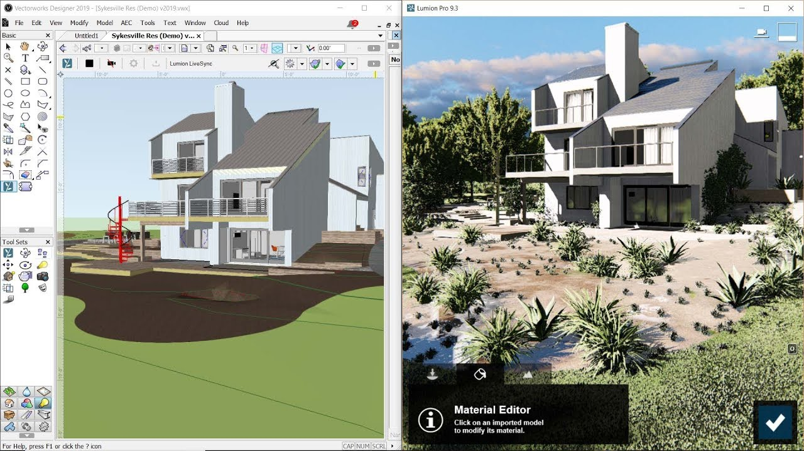
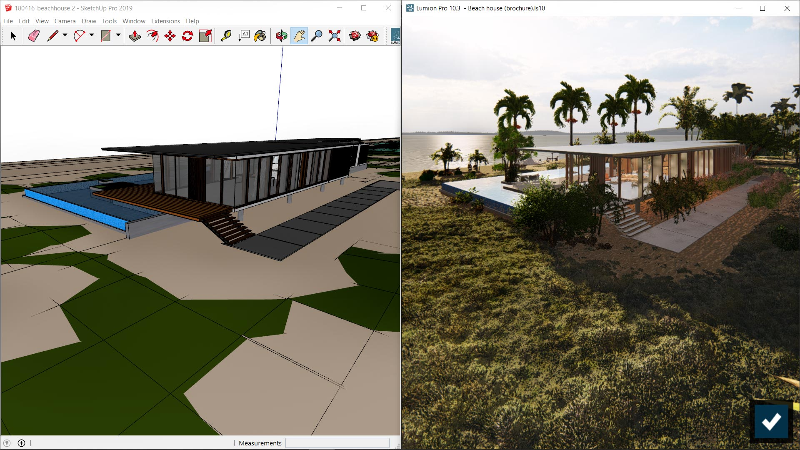
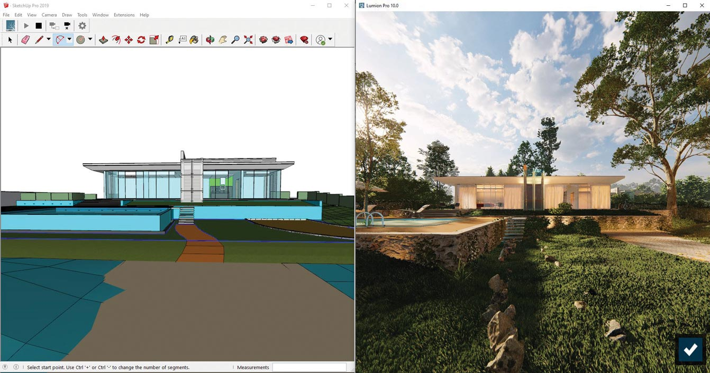

- Descripción
- Características
- Capture
- Video
Lumion Pro Full Español 2024 Descarga gratis MEGA
Lumion Pro Full permite a cualquier arquitecto transformar sus diseños CAD en renders de gran belleza sin necesidad de formación previa. Ya sea para comunicar su proyecto a un cliente, para colaborar con su equipo utilizando visualizaciones realistas o para realizar un cambio de diseño de última hora, Lumion Pro Crack aumenta la potencia para permitir un renderizado rápido y sin estrés con resultados que seguramente le harán sonreír.
Características de Lumion Pro Full Crack
- Capture su visión arquitectónica de la mejor manera posible
- El botón de estilos es la potencia de Lumion Full reunida. Solo tienes que pulsarlo y seleccionar un estilo. En un instante obtendrá una imagen impresionante con una columna vertebral de luz equilibrada, profundidad y realismo.
- Visualiza la creatividad como nunca antes con el nuevo simulador de luz diurna Sky Light y las mejoras de sombras suaves y finas. Actívelos y observe cómo el follaje y la hierba se vuelven dramáticamente fotorrealistas. Lumion Pro Full Observa cómo las sombras bajo las mesas y las estanterías se vuelven sutiles y suaves. Observe cómo las personas, las plantas y los edificios de repente parecen pertenecer al lugar donde están.
- Potencia del flujo de trabajo para obtener resultados más rápidos y mejores
- Lumion Pro Crack también le ayuda a comunicar claramente los diseños arquitectónicos con la nueva función de contorno «dibujado a mano». Consiga un aspecto realista suavizando los bordes duros de las estructuras y el mobiliario, simule una maqueta con el desplazamiento de la inclinación y renderice vídeos con una resolución 4K sorprendente.
- También puede establecer una opción junto a la otra y decidir cuál prefiere con el efecto de control de variación. Agrupe los objetos para facilitar la creación de escenas y benefíciese de muchas otras mejoras, como la función de colocación de masas curvas, una nueva herramienta de medición y mejores efectos de capa.
- Estilos
- Se acabó la búsqueda de los efectos adecuados. Se acabaron los días de equilibrar meticulosamente los controles deslizantes. Una vez que hayas vestido tu modelo 3D con materiales y objetos de Lumion Pro Descarga Gratis, solo tienes que hacer clic en el botón de estilos y seleccionar un estilo interior o exterior. En un instante tu diseño se convierte en un hermoso render con una combinación de efectos cuidadosamente equilibrada.
- Renderiza inmediatamente o personaliza el estilo en minutos. Cree un aspecto propio con un flujo de trabajo más rápido que nunca.
- Luz del cielo
- ¿Listo para renderizar? Si no has añadido el efecto Sky Light, entonces… bueno… no. Tal vez no. Porque es la única tecnología desarrollada especialmente para Lumion Pro Full Gratis para aumentar la sensación de ambiente, realismo y profundidad de su imagen.
- Sky Light es un avanzado simulador de luz diurna para suavizar y dispersar la iluminación ambiental de la escena. Utilizado en combinación con las Sombras Suaves y las Sombras de Detalle, refuerza la interacción real de estos elementos. Observa cómo el follaje y los árboles se vuelven fotorrealistas, y descubre cómo las personas, los edificios y los paisajes de repente parecen pertenecer al lugar donde están.
- Sombras suaves y finas
- Diseñar y renderizar sombras realistas puede ser una de las cosas más difíciles de hacer. Hasta ahora.
- En Lumion Licencia, puede inyectar realismo a su renderizado, activando las Sombras suaves y las Sombras finas de detalle como parte del efecto Sombra. Al instante, las sombras se vuelven más suaves, las penumbras crecen. Cientos de sombras de detalle fino se enriquecen y una sensación de profundidad realista impregna la imagen.
- Sentirás que sonríes al ver que tu diseño no construido se parece increíblemente al real.
- Hyperlight para vídeos
- Hyperlight es un potenciador para mejorar la calidad y la precisión de la iluminación. Con Lumion Última versión 2024, ahora puede aplicar el efecto Hyperlight al renderizar vídeos. Ya sea para animaciones de interiores o exteriores, el efecto Hyperlight actualizado viste su animación con una malla sorprendentemente realista de luz ambiental y artificial. Observa cómo los materiales y las texturas «saltan». Observa cómo los edificios, las personas y el follaje se integran en su entorno. Y mejora el realismo en un instante con Hyperlight para vídeos.

¿Dónde Puedes descargar Lumion Pro 2024 Full Crack gratis?
Puedes descargar Lumion Pro 2024 Crack en su arquitectura 32 Bits y 64 Bits gratis por MEGA o MEDIAFIRE desde los siguientes enlaces:
- Descarga
- Como activar / Crack
- Datos Tecnicos
Lumion Pro Crack y serial en español 64 bits Activado – 2024

Lumion Pro Full Crack y serial en español 64 Bits – 1 Link Pre-Activado
¿Deseas saber como realizar la descarga?
Si no puedes o sabes realizar la descarga, puedes dirigirte a la guía explicativa en la cual aprenderás a hacer la descarga de manera fácil y rápida, no dudes en verla | Clic Aquí
- ¡Si algún link ha fallado reportarlo en los comentarios! ¡Gracias por tu preferencia!
¿Cómo activar y/o crack Lumion Pro 2024 Full Crack?
- Primero descarga presionando el botón u enlace correspondiente.
- Para acelerar tu descarga puedes usar IDM Full gran gestor de descargas
- Desinstale la versión anterior con IObit Uninstaller Pro o Revo Uninstaller Pro.
- Desactive su Antivirus.
- Luego extraiga el archivo winrar y abra la carpeta. Abrir la carpeta Setup y ejecutar Lumion Pro
- Copiar a la carpeta donde se instaló lumion y Ejecutar el parche llamado lumion.pro.v12-cpg-tpc, pedira una contraseña la cual es: tpcrew-group colocarla y darle al boton Proceed
- Dar clic donde dice PATCH
- Ejecutar el lumion esperar que cargue y abra.
- Descomprimir el hotfix y Abrir la carpeta descomprimida (hotfix)
- Copiar el contenido de la carpeta hotfix, y pegarla en la carpeta de instalación del Lumion por default: C:\Program Files\Lumion 12.0
- Listo ahora está disfrutando de la última versión de Lumion Pro 12 2024.
¡NOTA IMPORTANTE!: Con el hotfix no está funcionando el crack en algunas ocasiones, así que queda a su discreción si instalar el hotfix
- Descomprimir el hotfix y Abrir la carpeta descomprimida (hotfix)
- Copiar el contenido de la carpeta hotfix y pegarla en la carpeta de instalación del Lumion por default: C:\Program Files\Lumion 12.0
Nombre Original: Lumion Pro 2024 Final
Idioma: Español (Multilenguaje) | Peso: 1.67 GB | Sistema operativo: Windows | Activador: Crack | Instrucciones: Incluidas | Creador: Lumion
Solo aparecen 13 partes
Hola, efectivamente son 13 partes, la version nueva esta comprimada en 13 partes
Buenas, descargue los archivos pero me sale de falta un archivo en la complilacion, deberia ser 10partes y solo hay 9
Hola, son 19 partes en total resubido el 12/06/21
falta la parte 10
Hola, son 19 partes en total resubido el 12/06/21
Al abrir el programa se cierra automaticamente, que estare haciendo mal? Ya le he pasado el parche
Buen dia, me pide contraseña…donde la encuentro
www.descarga.xyzcual es el archivo para descargar el crack? no lo encuentro
Viene incluido al descomprimir las 19 partes
Me dice que falta la parte 20 pero solo hay 19
Son 19 partes, y descomprimen normalmente, revisa que no se te bajara corrupta alguna
Como se haría la activación? ya que me sale que no hay licencia
descargue todo pero n no me quiere abrir
me pide parte 20.rar no me deja descomprimir por esta parte
son unicamente 19 partes…
Como se llama el archivo en el que se encuentra el crack?
Cuál es el proceso de instalación? Creo que lo hice mal y me sale «licencia no válida»
Donde tengo que pegar el crack ? no entiendo
al momento de abrir el crack, me pide una contraseña. Cual es??
www.descarga.xyzhola muchas gracias por el aporte, sin embargo en los archivos no aparece el crack
mu puede colaborar? muchas gracias
Extraiga el archivo winrar y abra la carpeta. Abrir la carpeta Setup y ejecutar Lumion ProEjecutar el parche llamado lumion.pro.v11-cpg-tpc, pedira una contraseña la cual es: tpcrew-group colocarla y darle al boton Proceed
Dar clic donde dice PATCH
Ejecutar el lumion esperar que cargue y abra.
Descomprimir el hotfix y Abrir la carpeta descomprimida (hotfix)
Copiar el contenido de la carpeta hotfix, y pegarla en la carpeta de instalación del Lumion por default: C:\Program Files\Lumion 11.0
Listo ahora está disfrutando de la última versión de Lumion Pro 11 2021.
Hola, al ejecutar Lumion, en el paso justo después de darle a Patch me aparecen mensajes de error en diferentes ventanas, estos son:
Solo me deja hacer click en aceptar y me salen repetidamente, sin llegar nunca a abrir el programa
Un saludo y gracias.
Hola, el programa funciona correctamente lo probé y funciono, puede que alguna parte se te descargara corrupta, o que el antivirus te eliminara algun archivo
Tengo el antivirus desactivado y lo he instalado 3 veces pero si era problema instalación pero me sigue pasando lo mismo
Hola, ya he conseguido solucionar el problema de la instalación pero tras realizar todos los pasos me dice «su clave de licencia no es válida».
Cuando en los pasos, usted dice:
· Ejecutar el lumion esperar que cargue y abra.
· Descomprimir el hotfix y Abrir la carpeta descomprimida (hotfix)
· Copiar el contenido de la carpeta hotfix, y pegarla en la carpeta de instalación del Lumion por default: C:\Program Files\Lumion 11.0
Al copiar el contenido, con el programa abierto, como usted dice, hay cosas del hotfix que da error al pegar porque dice: «La acción no se puede completar porque otro programa abrió la carpeta o uno de sus archivos».
Aún así he probado a cerrar el programa y entonces ya si deja copiarlo pero al abrirlo de nuevo tras haber realizado todos los pasos me da el error de la clave
¿Sabría alguna solución? Muchas gracias por su aporte.
Un saludo
al momento de abrirlo me dice que la licencia no es valida y no abre el programa.
Licencia no valida 🙁
Hola seguiste las instrucciones?, a mi me funciona correctamente lo sigo teniendo instalado y usando
Extraiga el archivo winrar y abra la carpeta. Abrir la carpeta Setup y ejecutar Lumion Pro
Ejecutar el parche llamado lumion.pro.v11-cpg-tpc, pedira una contraseña la cual es: tpcrew-group colocarla y darle al boton Proceed
Dar clic donde dice PATCH
Ejecutar el lumion esperar que cargue y abra.
Descomprimir el hotfix y Abrir la carpeta descomprimida (hotfix)
Copiar el contenido de la carpeta hotfix, y pegarla en la carpeta de instalación del Lumion por default: C:\Program Files\Lumion 11.0
Listo ahora está disfrutando de la última versión de Lumion Pro 11 2021.`
ya realice todos los pasos y me abre pero luego se cierra, ¿seguros que sirve ?
Hola seguiste las instrucciones?, a mi me funciona correctamente lo sigo teniendo instalado y usando
Extraiga el archivo winrar y abra la carpeta. Abrir la carpeta Setup y ejecutar Lumion Pro
Ejecutar el parche llamado lumion.pro.v11-cpg-tpc, pedira una contraseña la cual es: tpcrew-group colocarla y darle al boton Proceed
Dar clic donde dice PATCH
Ejecutar el lumion esperar que cargue y abra.
Descomprimir el hotfix y Abrir la carpeta descomprimida (hotfix)
Copiar el contenido de la carpeta hotfix, y pegarla en la carpeta de instalación del Lumion por default: C:\Program Files\Lumion 11.0
Listo ahora está disfrutando de la última versión de Lumion Pro 11 2021.
si ya realice todos los pasos pero sigue abriendo y cerrando al mismo tiempo.
Yo lo instale seguí todos los osos y abre pero así mismo se cierra, este crack yanera de activarlo no sirve.
Hola seguiste las instrucciones?, a mi me funciona correctamente lo sigo teniendo instalado y usando
Extraiga el archivo winrar y abra la carpeta. Abrir la carpeta Setup y ejecutar Lumion Pro
Ejecutar el parche llamado lumion.pro.v11-cpg-tpc, pedira una contraseña la cual es: tpcrew-group colocarla y darle al boton Proceed
Dar clic donde dice PATCH
Ejecutar el lumion esperar que cargue y abra.
Descomprimir el hotfix y Abrir la carpeta descomprimida (hotfix)
Copiar el contenido de la carpeta hotfix, y pegarla en la carpeta de instalación del Lumion por default: C:\Program Files\Lumion 11.0
Listo ahora está disfrutando de la última versión de Lumion Pro 11 2021.`
no sirve ya lo instale y realice todos los pasos, solo inicia y luego se cierra, por eso digo que no sirve
Hola, ya he conseguido solucionar el problema de la instalación pero tras realizar todos los pasos me dice «su clave de licencia no es válida».
Cuando en los pasos, usted dice:
· Ejecutar el lumion esperar que cargue y abra.
· Descomprimir el hotfix y Abrir la carpeta descomprimida (hotfix)
· Copiar el contenido de la carpeta hotfix, y pegarla en la carpeta de instalación del Lumion por default: C:\Program Files\Lumion 11.0
Al copiar el contenido, con el programa abierto, como usted dice, hay cosas del hotfix que da error al pegar porque dice: «La acción no se puede completar porque otro programa abrió la carpeta o uno de sus archivos».
Aún así he probado a cerrar el programa y entonces ya si deja copiarlo pero al abrirlo de nuevo tras haber realizado todos los pasos me da el error de la clave
¿Sabría alguna solución? Muchas gracias por su aporte.
Un saludo
ME SALE ESTO NO ENTIENDO POR QUE. AYUDA POR FAVOR
son 19 partes, revisa que descargaras todas
Hola, ya he conseguido solucionar el problema de la instalación pero tras realizar todos los pasos me dice «su clave de licencia no es válida».
Cuando en los pasos, usted dice:
· Ejecutar el lumion esperar que cargue y abra.
· Descomprimir el hotfix y Abrir la carpeta descomprimida (hotfix)
· Copiar el contenido de la carpeta hotfix, y pegarla en la carpeta de instalación del
Lumion por default: C:\Program Files\Lumion 11.0
Al copiar el contenido, con el programa abierto, como usted dice, hay cosas del hotfix que da error al pegar porque dice: «La acción no se puede completar porque otro programa abrió la carpeta o uno de sus archivos».
Aún así he probado a cerrar el programa y entonces ya si deja copiarlo pero al abrirlo de nuevo tras haber realizado todos los pasos me da el error de la clave
¿Sabría alguna solución? Muchas gracias por su aporte.
Un saludo
Hola, me dice que la contraseña http://www.descarga.xyz es incorrecta. que puedo hacer en ese caso?
es
www.descarga.xyzsin el httpimposible descargar. He probado en todos los enlaces y solo anuncios y spam.
ve nuestra guia de como descargar
Descarga incompleta, solo 9 archivos de 19…
son 19 archivos no 20
Encontre una solución para el error lumion 11 could not found in installation skipping.
Tienen que ir al threat protection de windows y restaurar las .dll que detecta como virus y puso automaticamente en cuarentena.
El resto a mi me funcionó bien.
Tambien hay un fix en youtube para solucionar un problema con otra .dll
Anda perfecto! gracias por el aporte!
Hola! me costó instalarlo pero lo logré, les comparto lo que hice pq no entendía bien los pasos que dejaron acá
1º Desactivé el antivirus desde la configuración de windows
2º Después de instalar el lumion con el set up (siguiendo los pasos que dicen acá), no lo ejecuté, sino lo que hice fue copiar el ejecutable crack » lumion.pro.v11-cpg-tpc » en la carpeta donde se instalo el lumion » D:\Program Files\Lumion 11.0 » (en mi caso) y una vez ahi adentro lo ejecute y le di a «patch». TAMPOCO copie y reemplace los archivos de la carpeta del hotfix pq lo venia haciendo y no me funcionaba, cuando dejè de hacerlo, me funcino.
Asi q seria simplemente eso, instalar el lumion normalmente, copiar el ejecutable del crack en la carpeta donde se instaló y darle a patch, abrir el programa normalmente.
A mi tambien me funcionó eso mismo, gracias!
Gracias, hasta ahora me funciona perfecto!
Lo que me funcionó:
Instalé el programa, luego corrí el patch como se menciona en la guía, primero lo copié a la carpeta de instalación y ahí lo corrí, no sé si eso sea relevante.
Luego, sin abrir el programa, copié lumion.exe, del comprimido de hotfix que se descarga con el programa, a la carpeta de instalación, y desde ese ejecutable abrí el programa. Una vez que terminó el benchmark copié a la carpeta de instalación el resto de los archivos del comprimido.
Ojo: El programa no arranca con el acceso directo que se creó durante la instalación, hay que crear uno nuevo desde el ejecutable en la carpeta de instalación.
Espero les sirva.
Hola, primero muchas gracias por tomarse el tiempo para subir este programa. Segundo, Que pasa si no decido utilizar la carpeta del hotfix?
No te funcionaran algunas caracteristicas
tambien me salio esos errores y lo q hice fue:
desactivar antivirus totalmente
instalar setup
copiar en el carck archivo lumion.pro.v11-cpg-tpc, ejecutarlo como administrador y dar clcik en pacht, abrir lumion 11 que cargue y cerrarlo.
descomprimir hotfil y copiarlo en la carpeta de instalacion y reemplazar archivos
de ahi excluir en el antivirus q tengas la carpeta lumion 11
tb tiene q tener instalados todos los directx visual etc
pasiencia y buen humor
espero les ayude
hola buenas tardes ya he instalado Lumion, la carpeta del parche la coloque en la direccion donde esta instalado lumion en c, al ejecutar el parche no se donde colocar la contraseña, no me deja escribirla, por lo cual me manda licencia invalida. que paso debo seguir. gracias por su atención
Tienes que colocar solo el parche sin la carpeta de por medio
DONDE ENCUENTRO LAS OTRAS 6 PARTES SI SOLO APARECEN 13?
Esta version son 13 Partes
Buenas! Solo me aparece esto cuando voy a instalar el lumion, no llega a instalarse del todo. AYUDA PORFA!!
Debes bajar todas las partes, para que el winrar descomprima todo correctamente.
Me salta este error, ayer iba pero hoy no
Hola como estas? descargue el lumion y se instalo bien. El tema es que al abrir el archivo del PATCH no me pide la contraseña y no patchea.
Ejecutalo como administrador
si funciona! El patch lo guarde en la carpeta que se instalo de lumion y de ahi lo active. eso si, no se q es el hotfix, lo habran eliminado supongo.
solo aparecen 6 partes
Desbes descargar ambas partes son 2 partes
Gracias genioo
Hola!
Si no sigo este paso: «Copiar el contenido de la carpeta hotfix, y pegarla en la carpeta de instalación del Lumion por default: C:\Program Files\Lumion 12.0» conseguiré utilizar de igual modo Lumion? En qué afecta esto al programa?
Saludos.
Debes seguir todos los pasos pero si te funciona sin eso no hay problema
el parche me dice
contraseña invalida
mira el txt contenido en el .rar ahi esta la clave
Ya lo resolví!
Quizás te faltaría agregar en el manual, que copien los archivos de la carpeta PATH dentro de la carpeta de instalación del lumion. Y ejecutarla desde esa carpeta.
Saludos! y buen aporte!
me aparecen solo 12 partes ayuda porfavor
Acabamos de subir todas las partes, de la nueva version
me pide codigo de activacion cuando ejecuto el .exe
Aplica el patch de la nueva version